$(t, n)$ case from Canetti et al. (2021) #
In this work, Canetti et al. present a protocol for Threshold ECDSA signatures with the following characteristics:
- Only the last round of the protocol needs knowledge of the message to be signed. Therefore, all the previous rounds can be executed in a preprocessing stage.
- The protocol supports adaptative corruption in the signing phase. In this case, the authors provide a mechanism to refresh the auxiliary information and keys used in the signing phase to provide security against an attacker that corrupts a different set of parties over time.
- The protocol realizes an ideal threshold signing functionality in the UC framework.
- The protocol achieves identifiable abort in the signing process.
The above characteristics make this protocol compatible with solutions that use cold wallets in cryptocurrencies given that the protocols are non-interactive (i.e. only the last round requires the knowledge of the message to be signed). To allow a non-interactive signing phase, there is a process of pre-signing which can be computed without any knowledge of the message. The parties engage in a protocol $L$ times in a concurrent way to obtain pre-signing data for $L$ signatures. Once the message is known, the parties retrieve one tuple of the generated pre-signing data and use it to generate a signature. Then, the parties erase the pre-signing information once it is used.
The signing protocol can be divided into two phases: a preprocessing phase in which the keys and the required auxiliary information are established, and a non-interactive phase in which the parties locally retrieve the information needed to construct the signature and locally compute a share of it.
It is important to mention that this work only focuses on the $n$-out-of-$n$ signature case and it does not cover the case of $t$-out-of-$n$ explicitly. However, to obtain a protocol for the latter case, the protocol can be easily modified using Shamir secret-sharing as presented in Gennaro & Goldfeder (2020).
Preliminaries #
As in previous works about threshold ECDSA, this work also uses the Paillier encryption scheme extensively. Also, it uses some zero-knowledge proofs to guarantee a correct execution in the presence of malicious adversaries. The ZK-proofs used in this work will be presented in the next section along with a strategy to compile $\Sigma$-protocols into a non-interactive version using a random oracle via the Fiat-Shamir heuristic.
A concept that appears in this protocol different from its predecessor is the proactive security. Although threshold signature protocols bring additional security for digital signatures, they may still be vulnerable to an attacker who can corrupt a set of parties that change over time. According to Canetti et al., in a proactive threshold signature scheme, the time is divided into epochs, such that at the end of each epoch, the parties engage in a protocol to refresh all the information needed to generate a signature (i.e. keys, local state, and random values). If the protocol is proactive, it remains secure as long as at most $t - 1$ players are compromised within a single epoch. Therefore, if the set of compromised parties changes from one epoch to the next, the protocol remains secure as long as the number of parties is within the threshold.
NP-relations #
In this section, we present the NP-relations that will be used in the protocol to determine whether the protocol has been executed correctly or not by using ZK-proofs.
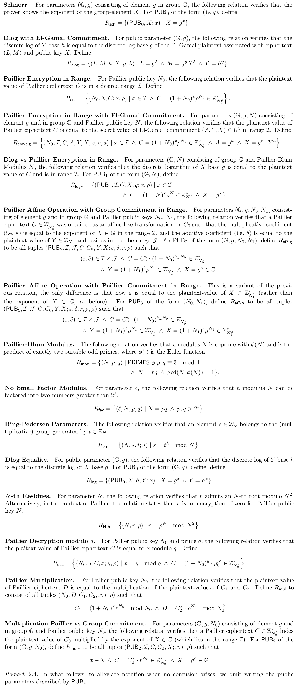
ZK-Module #
Now, we present the strategy used by Canetti et al. to compile a $\Sigma$-protocol into a non-interactive version using the Fiat-Shamir heuristic. Aside from the standard prove and verify operations. This module contains a commit operation to output the first message $A$ of the ZK-proof, which is useful in security analysis. The ZK-Module is presented next.
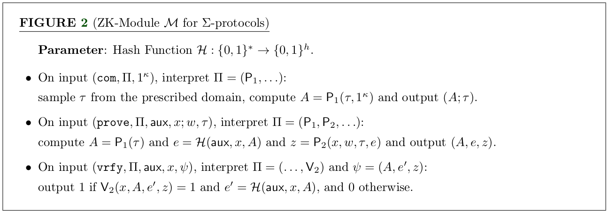
Protocol description #
In this section, we present the threshold ECDSA signing into two versions: the first one will be an online signing, and the second one will be a non-interactive signing. Those protocols use the key generation, the key and auxiliary information refresh, and the signing process as building blocks that will be covered in the next sections.
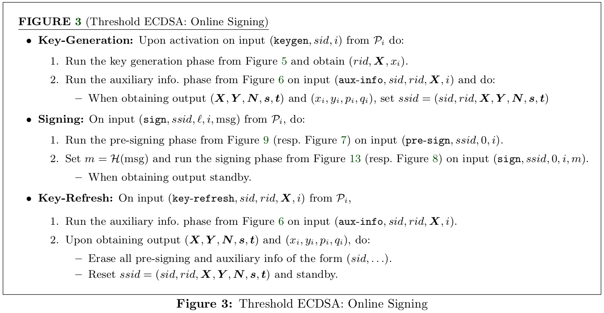
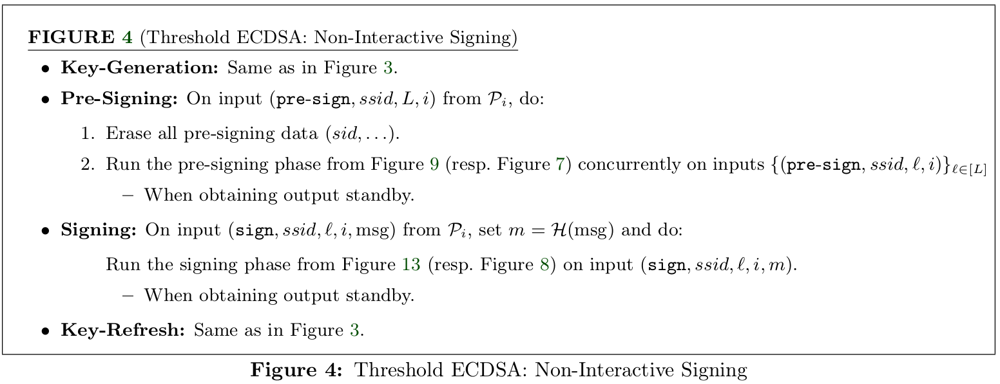
Key generation #
Briefly speaking about the key generation protocol, each party $P_i$ samples a random element $x_i \stackrel{R}{\leftarrow} \mathbb{F}_q$ which will be an additive share of the secret key $x = \sum_{i=1}^n x_i$ and then reveals the value of $X_i = g^{x_i}$. Notice that $X = \prod_{i=1}^n X_i = g^x$ is the public key associated to $x$. By using ZK-proofs and commitments, the parties guarantee the consistency of $X_i$.
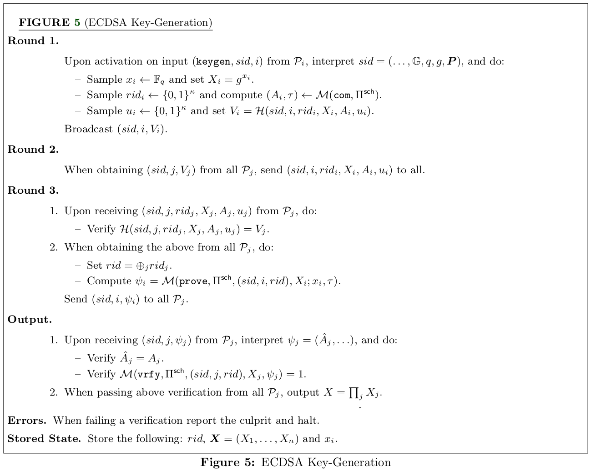
Key refresh and auxiliary information #
In the key refresh and auxiliary information phase, each party $P_i$ generates a fresh Paillier modulus $N_i$ and ring-Pedersen parameters $(s_i, t_i)$. Also, each party $P_i$ generates additive shares of zero $(x_i^1, \dots, x_i^n)$ such that $\sum_{j=1}^n x_i^j = 0$ and then computes the vector of group elements $\mathbf{X}_i = (X_i^1 = g^{x_i^1}, \cdots, X_i^n = g^{x_i^n})$. Then the party $P_i$ sends all the elements $N_i, s_i, t_i, \mathbf{X}_i$ to all the other parties. After obtaining all the values from other parties, each party encrypts $x_i^j$ under the Paillier encryption scheme using the public key $N_j$ to obtain the value $C_i^j$ for $j \neq i$, and then, $P_i$ sends to $P_j$ the encrypted value.
Once each party receives the information sent above, they re-compute the shares of the secret key as $x_i^* = x_i + \sum_{j=1}^n x_j^i \mod q$, and update the group elements to be consistent with the new secret key shares by doing $X_i^* = X_i \cdot \prod_j X_j^i$. Also, each party stores the Paillier modulus and Pedersen parameters $(N_1, s_1, t_1), \dots, (N_n, s_n, t_n)$.
Throughout the execution of the protocol, the parties use ZK-proofs to guarantee the consistency of the values. For example, the parties use such proofs to check that the Paillier keys and Pedersen parameters are well-formed and to check that the values of $X_i^j$ are consistent with the values of $x_i^j$.
Next, we present a detailed specification of the protocol taken from the paper of Canetti et al.
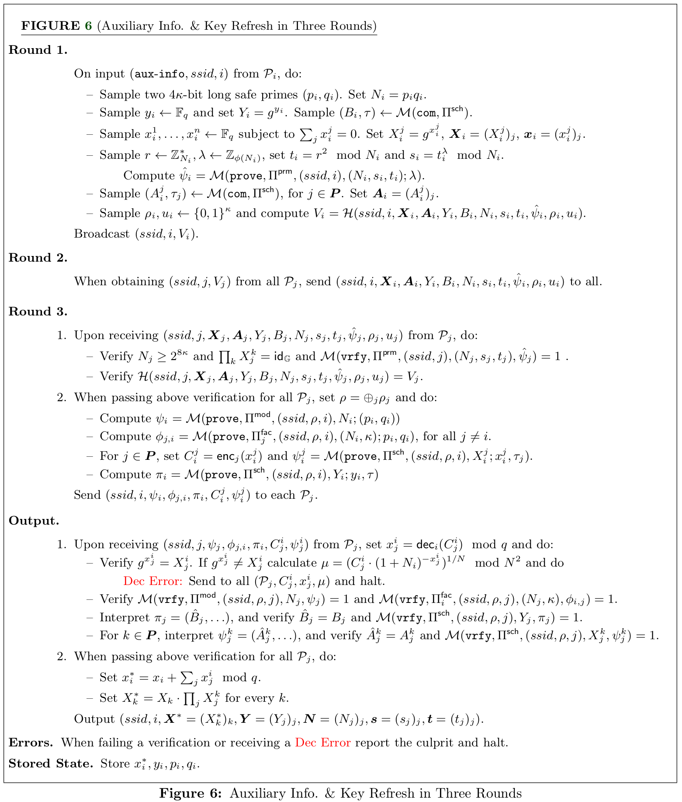
Three-round presignin with $O(n^2)$ identification cost #
Remember that one of the main contributions of the work of Canetti et al. is to propose a non-interactive protocol for signing. This means that all the rounds but the last one do not need the knowledge of the message to be executed. The rounds preceding the construction of the signature are called pre-signing. Here, we show a version of the presigning phase that has three rounds, and it can identify the corrupt parties with a cost of $O(n^2)$.
The pre-signing protocol of Canetti et al. uses similar techniques presented in the signing protocol of Gennaro & Goldfeder (2020). Specifically, in both works, they use the concept of transforming multiplicative shares into additive shares using the Paillier encryption scheme. This technique allows the parties to compute additive shares of a masked version of $k$ and also it allows them to find additive shares of $k \cdot x$, where $k$ is the nonce used in the signing process. At the end of the signing protocol, the parties will obtain shares $(R, k_i, \chi_i)$, where $k_i$ is an additive share of the nonce $k$, $\chi_i$ is a share of $k \cdot x$ and $R = g^{k^{-1}}$.
One of the advantages of this protocol is that the parties can engage in $L$ concurrent sessions to generate tuples $\left \{ (l, R_l, k_{i, l}, \chi_{i, l}) \right \}_{i=1}^L$ as the pre-signing material for $L$ signatures. The parties can store these tuples in the local memory and they extract a fresh tuple once the message to be signed is known. However, it is important to ensure that the parties erase the pre-signing tuples that were already used to avoid security vulnerabilities.
We present a detailed specification of the protocol next, which is taken from the paper of Canetti et al.
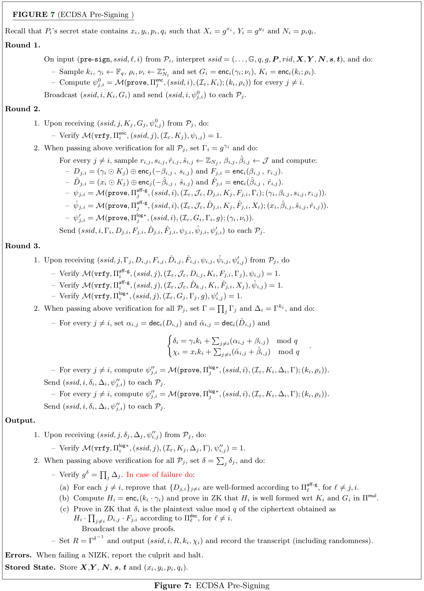
Signing #
Once the pre-signing phase has been executed, parties have shares $(R, k_i, \chi_i)$ in their local memory. Therefore, once the parties know the hash of the message $m$ to be signed, they can retrieve a pre-signing tuple $(R, k_i, \chi_i)$, then compute $r = R \vert_{x-\text{axis}}$, and locally compute an additive share of the signature $\sigma_i = k_i \cdot m + r \cdot \chi_i \mod q$. Then, each party broadcasts the additive share $\sigma_i$ to the rest of the parties to reconstruct the signature $(r, \sigma)$. It is important to remember that the parties must erase the used pre-signing tuples.
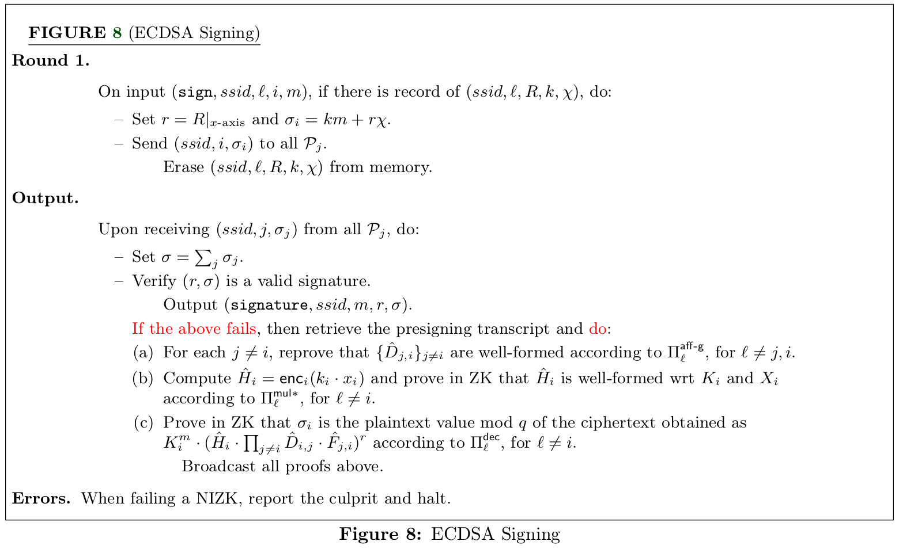
Six-round presigning with $O(n)$ identification cost #
In their paper, Canetti et al. present an alternative to compute the presignin phase that takes six rounds but it has a linear identification cost, contrary to the previous version where the presigning takes three rounds but a quadratic identification cost. The differences between this version concerning the previous one can be highlighted in two points: (1) the parties publish the values of $\Gamma_i = g^{\gamma_i}$ after the computation of $\delta = k \cdot \gamma$, and (2) the parties commit the share $\chi_i$ using an Elgamal fashion to generate a pseudo-key $S_i = R^{\chi_i}$ to identify the corrupt parties in an abort. Next, we present the protocol specification taken from the paper of Canetti et al.
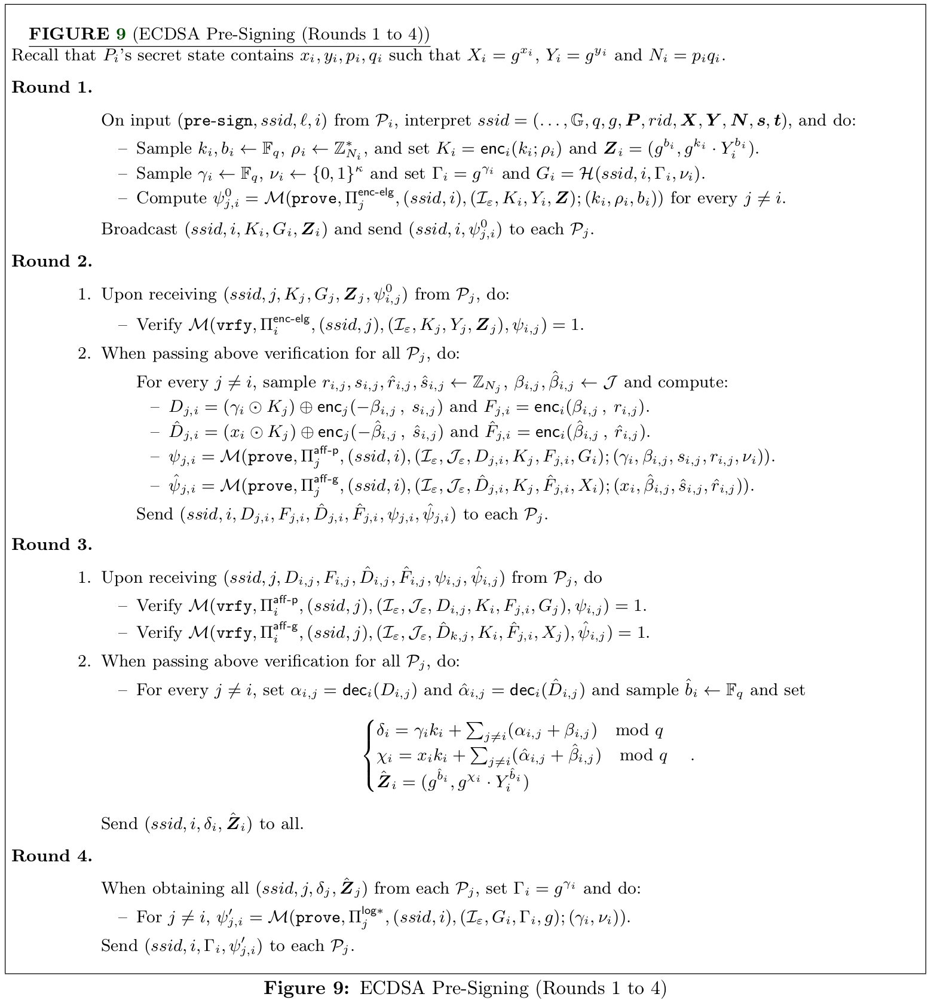
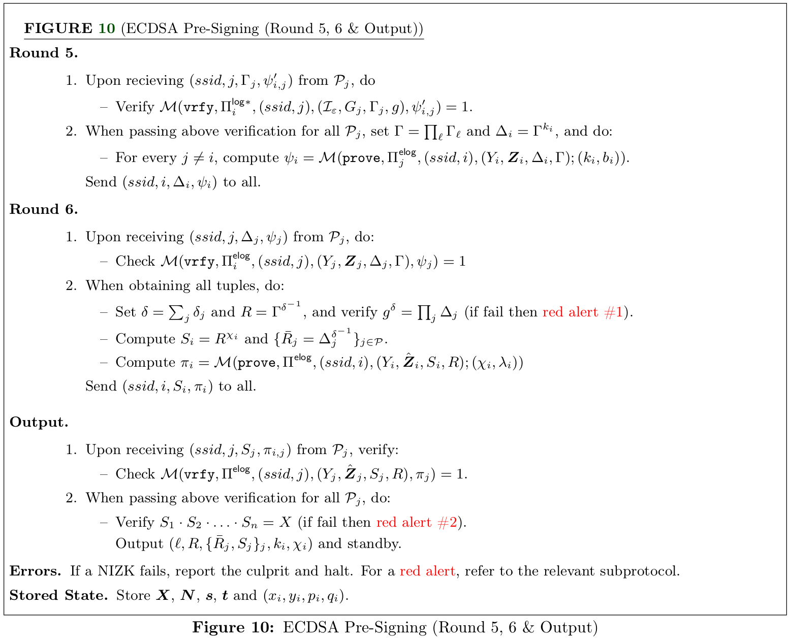
Identification process #
In this version of the protocol, the abort can be produced in two points: (1) when $g^\delta \neq \prod_i \delta_i$ in Round 6, and (2) when $\prod S_i \neq X$ in Round 7. The difficulty here is that if one of those checks does not pass, it is not immediate which of the parties produced the fault. To solve this, depending on the fault point, the parties are instructed to reveal in zero-knowledge the plaintext values of $K_i$ and $\{ D_{i,j} \}$ and the power of $\Gamma_i$ for the fault point (1), and the plaintext values of $K_i$ and $\{ \hat{D}_{i,j} \}$ and the secret hidden by $\mathbf{Z}_i$ for the fault point (2). With these values, the parties now can identify who is the party that produced the fault. For more details, we present the specification of the identification process for both points in the following protocols taken from the paper of Canetti et al.
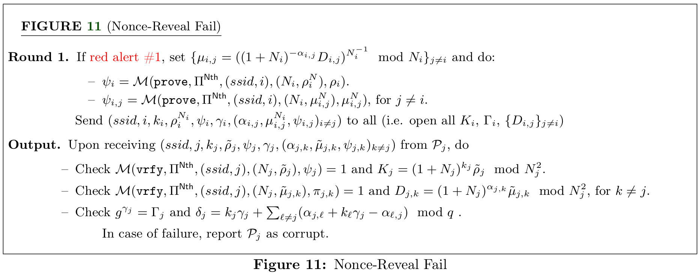
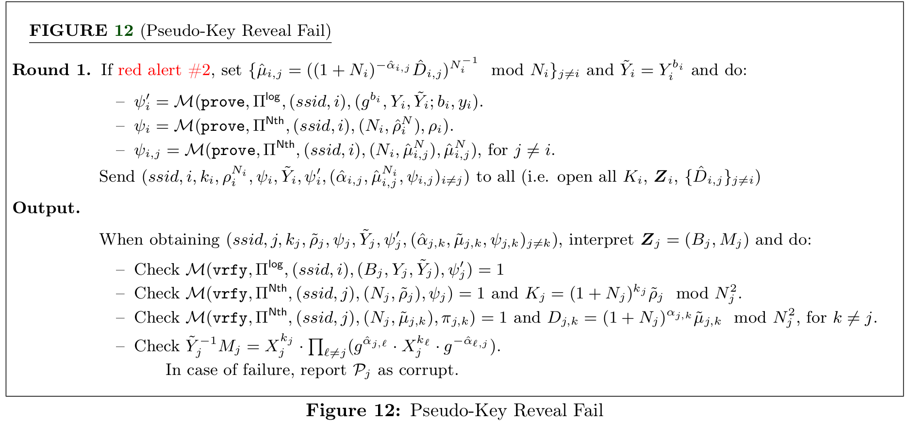
Signing #
Once the hash $m$ of the message is known, the parties retrieve a tuple $(l, R, \{ \bar{R}_j, S_j \}_j, k_i, \chi_i)$ coming from the presignin phase and stored in the local memory. Then, the parties compute a share of the signature by calculating $r = R \vert_{x-\text{axis}}$ and then they set $\sigma_i = k_i \cdot m + r \cdot \chi_i \mod q$. Each party broadcasts its share $\sigma_i$, and when the party has the shares of the other parties, the party checks that $R^{\sigma_j} = \bar{R}_j^m \cdot S_j^r$ for all $j \neq i$. If all checks pass, then the party returns $\left (r, \sum \sigma_i \right )$ as the signature. Next, we present all the details of the signing protocol taken from the paper of Canetti et al.
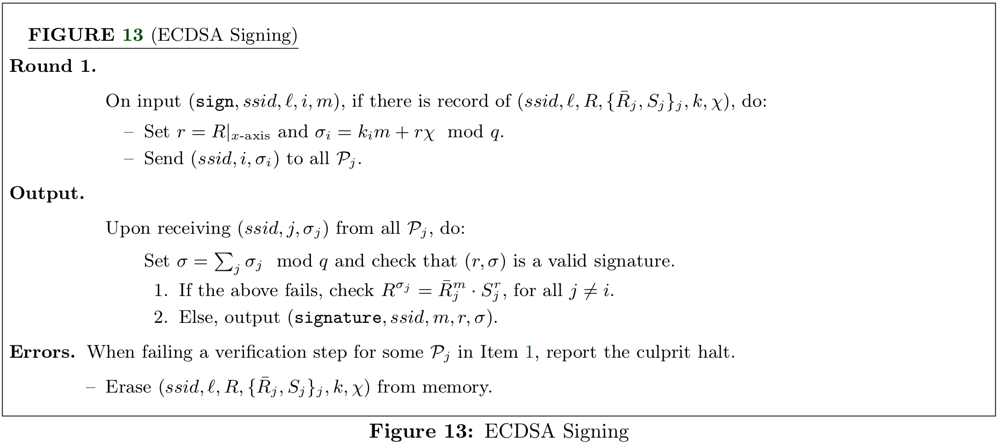
$\Sigma$-protocols #
In this section, we present some of the underlying $\Sigma$-protocols used to provide security against malicious adversaries. Similar to the paper of Canetti et al., we exclude the protocols for those NP-relations that are similar to the ones presented here or they are Schnorr-based proofs. For more details about the remaining protocols, we refer the reader to Appendix C. in the paper of Canetti et al. Remember that all the relations used in this review are presented in the list of relations presented in a previous section.
Paillier encryption in range #
This protocol is the $\Sigma$-protocol for the relatin $R_{\textsf{enc}}$. In this case, the input of the protocol for tuples of the form $(\mathcal{I}, C; k, r_0)$, where $\mathcal{I} = \{-2^l, \dots, 0, \dots, 2^l\}$ (remember that this set is denoted as $\pm 2^l$). The Prover want to convince the Verifier that he knows $k \in \pm 2^l$ , such that $C = (1 + N_0)^k \cdot r_0^{N_0} \mod N_0^2$. Next, we will present the details of the protocol taken from the paper of Canetti et al.
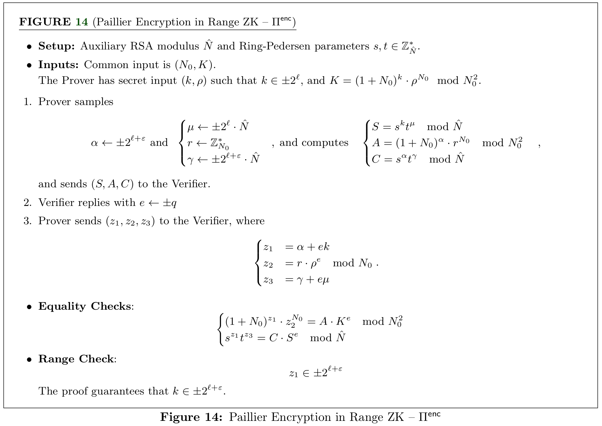
Paillier operation with group commitment in range #
This $\Sigma$-protocol executes on tuples of the form $(\mathcal{I}, \mathcal{J}, C, Y, X; x, y, k, r_0)$ where $\mathcal{I} = \pm 2^l$ and $\mathcal{J} = \pm 2^{l'}$ satisfying the relation $R_{\textsf{aff-g}}$. In this proof, the Prover tries to convince the Verifier that he knows $x \in \pm 2^{l}$ and $y \in \pm 2^{l'}$ such that $X = g^x$ and $Y = \textsf{enc}_{N_1}(y) \in \mathbb{Z}_{N_1^2}$ under the Paillier encryption scheme, and $C, D \in \mathbb{Z}_{N_0^2}$ such that $D = C^x (1 + N_0)^y \cdot \rho^{N_0} \mod N_0^2$, for some $\rho \in \mathbb{Z}_{N_0}^*$.
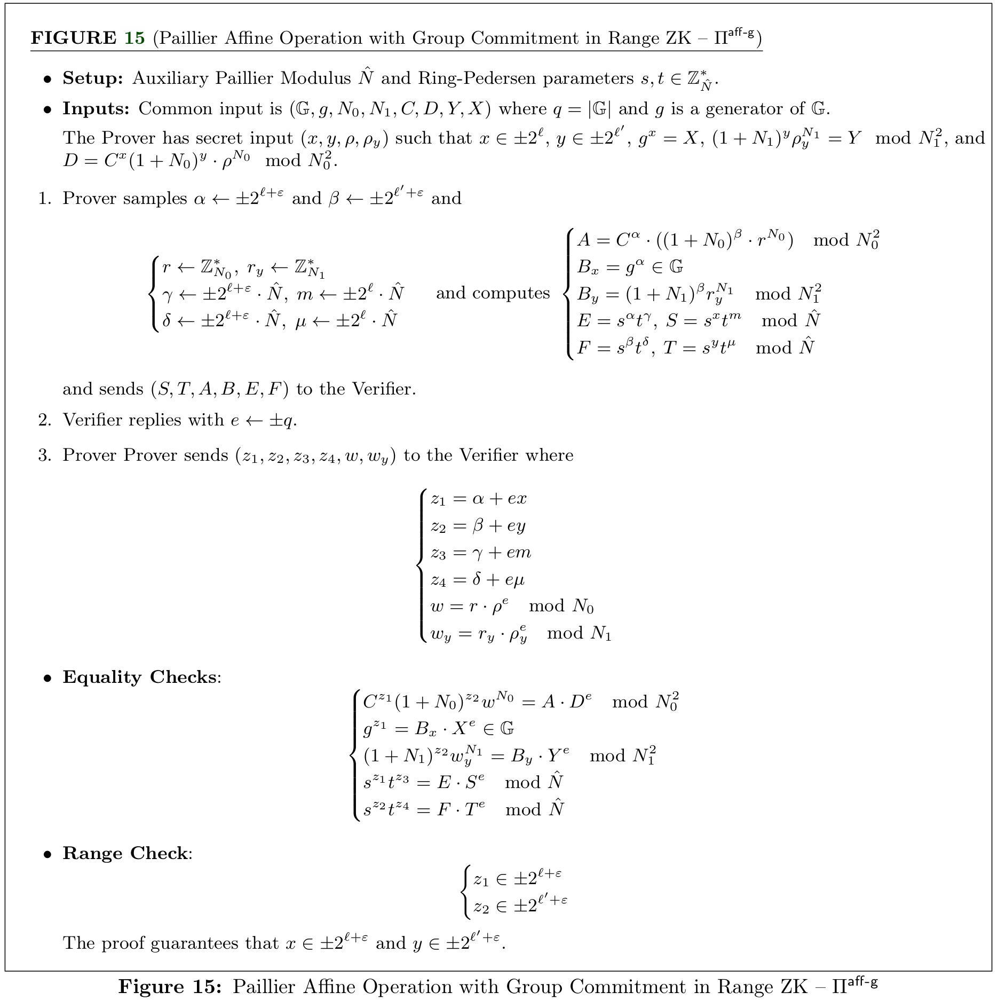
Paillier-Blum modulus in zero-knowledge #
Now, we show a $\Sigma$-protocol for tuples of the form $(N; p, q)$ satisfying the relation $R_\textsf{mod}$. In this case, the Prover wants to convince the Verifier that $N$ is a Paillier-Blum modulus. This means that the Prover knows a pair of prime numbers $(p, q)$ such that $N = pq$ and satisfying that $p, q \equiv 3 \mod 4$.
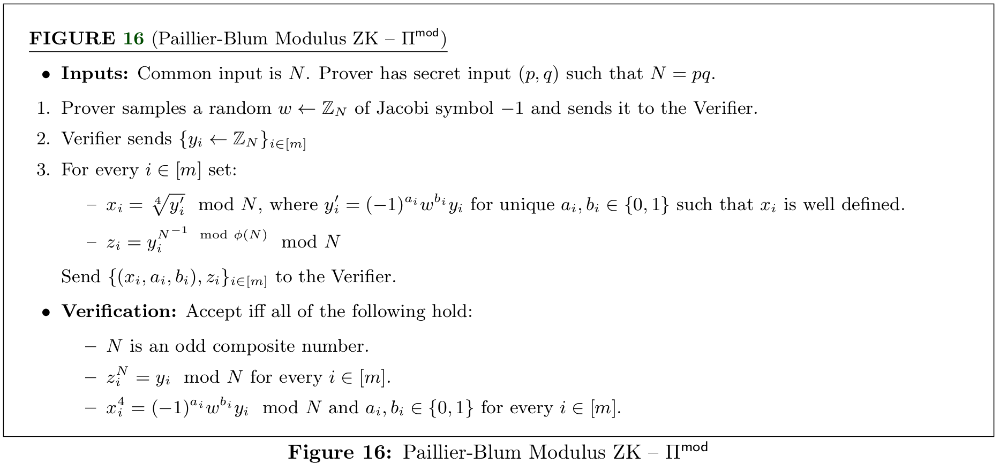
Ring-Pedersen parameters in zero-knowledge #
Here, we present a $Sigma$ protocol for tuples of the form $(N, s, t; \lambda)$ for the relation $R_\textsf{prm}$. In this proof, the Proover wants to convince the Verifier that he knows a power $\lambda$ for which $s = t^\lambda$, or equivalently, the Proover wants to convince the verifier that $s$ belongs to the multiplicative group generated by $t$. Next, we present the protocol for this proof taken from Canetti et al.
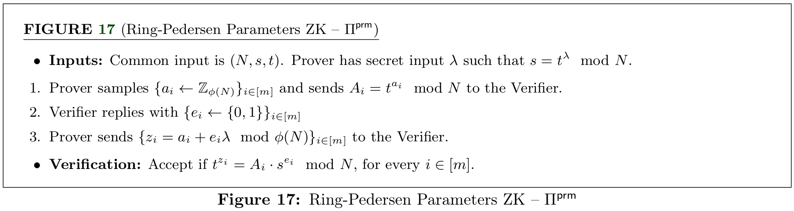
Security concerns #
- The security of the protocol relies on the following assumptions: strong RSA, DDH, semantic security of the Paillier encryption scheme, and an enhanced variant of the existencial unforgeability of ECDSA.
- The protocol assumes that the signatories are connected using an authenticated and synchronous broadcast mechanism. The use of an authenticated communication channel is essential to obtain proactive security and synchronous broadcast mechanisms are essential for accountability.
- Whenever a NIZK fails for some party, the remaining parties identify such party as the culprit and report it as corrupted.
- It is important to make sure that, as part of the refresh stage to guarantee proactivity, any unused tuples computed in the presigning phase need to be discarded.
- Remember that this protocol focuses on the case of $n$-out-of-$n$ for the signing phase, however, this work can be extended to the case of $t$-out-of-$n$ using similar techniques to Gennaro & Goldfeder (2020) by using verifiable Shamir secret-sharing schemes. However, we need to be careful at the moment of using preprocessing data. In this case, each set of authorized parties needs to generate independent preprocessing data. Also, we need to make sure that if a party engages in a signature protocol with different authorized sets, he/she must not use the same preprocessed data between authorized sets.
- It is important to ensure that the parties are not signing two different messages using the same preprocessed data. These actions can enable attackers to reveal the private signing key.
- In the protocol, the parties need to use some ZK-proofs that require setup parameters. Given that the protocol does not assume any trusted setup, the parties need to compute these setup parameters themselves. Specifically, as stated in Section 2.3, the setup parameter is generated by the Verifier along with a ZK-proof to check that the setup parameters are well formed.
- In the notation of the ZK-Module, the authors often omit the randomness in the tuple, but in any case, we need to sample fresh randomness.
- In Figure 3 where it is presented the online signing, the parties need to erase all the presigning and auxiliar information once the key refresh is executed. Also, the parties need to reset the $ssid$ to a new one consistent with the new presigning information.
- In Figure 4 for the Presigning stage, the party $P_i$ needs to erase all presigning data for the session id $sid$.
For the key generation #
- In Round 3, Step 1, of the Key generation protocol, the parties need to verify that querying the random oracle with the first message of the ZK-proof matches with the value sent by the parties.
- In the Output phase, Step 1, the parties need to verify that the first message of the received proof coincides with the committed first message of the proof constructed in the first round.
- In case of a failing verification, the parties need to report the corrupt party and halt.
For the key refresh and auxiliary information #
- In Round 3, Step 1, each party $P_i$ needs to verify that the $N_j$ received from party $P_j$ fulfills the condition $N_j \geq 2^{8\kappa}$ and that $\prod_k X_j^k = \textsf{id}_{\mathbb{G}}$ (the identity of the group $\mathbb{G})$.
- In Round 3, Step 1, each party $P_i$ needs to verify that the information received from Round 2 when evaluated into the random oracle matches with the commitment constructed and sent in Round 1 ($V_j$) for each other party $P_j$.
- In the Output phase, the party $P_i$ needs to compute the following checks:
- Verify that $g^{x_j^i} = X_j^i$. If this equality does not hold, $P_i$ computes $\mu = (C_j^i \cdot (1 + N_i)^{x_j^i})^{1/N}$. Then, the party broadcasts $(P_j, C_j^i, x^i_j, \mu)$ and halts.
- Verify that the first message of the proof $\pi_j$ coincides with the commitment of the first message ($B_j$) obtained as a result of the first round.
- Verify that the first message of the Schnorr proof obtained from the first round ($A_j^k$) coincides with the first message of the proof $\psi_j^k$.
- When there is a failure in some verification or the “Dec Error” is received, the party needs to report the culprit and halt.
For the three-round version #
Presigning #
- In the Output phase, the parties need to verify that $g^\delta = \prod_j \Delta_j$. If this equality does not hold, the parties need to execute the steps presented in Step 2 of the Output phase.
- If there is an error in some NIZK, the parties must report the party that induced the failure and then halt.
Signing #
- In Round 1, the parties need to erase the presigning tuple used once the signature share is computed and broadcasted.
- In the Output phase, the parties need to verify that the constructed signature is a valid signature using the standalone version of the $\textsf{Verify}$ algorithm.
- If there is an error in some NIZK, the parties must report the party that induced the failure and then halt.
For the six-round version #
Presigning #
- In the Round 6, Step 2, the parties need to verify that $g^\delta = \prod_j \Delta_j$. If this equality does not hold, the parties execute the steps proposed in the “red alert #1”.
- In the Output phase, Step 2, the parties need to verify that $\prod S_k = X$. If this equality does not hold, the parties execute the steps presented in the “red alert #2”.
- If any NIZK fails, the parties report the culprit and halt. If the failure occurs and directs the parties to some red alert, the step of the corresponding alert must be executed.
Identification process #
For red alert #1 #
In the Output phase, we need to check the following equalities:
- Check that $K_j = (1 + N_j)^{k_j} \tilde{\rho}_j \mod N_j^2$.
- Check that $D_{j,k} = (1 + N_j)^{\alpha_{j, k}} \tilde{\mu}_{j,k} \mod N_j^2$, for $k \neq j$.
- Check that $g^{\gamma_j} = \Gamma_j$ and $\delta_j = k_j \gamma_j + \sum_{l \neq j} (\alpha_{j, l} + k_l \gamma_j - \alpha_{l, j}) \mod q$.
If any of the previous checks fails, the party detecting the failure reports the corrupt party according to the check computed.
In this protocol, there are two typos in Round 1:
- In the first proof, the correct instruction would be $\psi_{i} = \mathcal{M}(\texttt{prove}, \Pi^{\textsf{Nth}}, (ssid, i), (N_i, \rho_{i}^{N_i}), \rho_{i})$.
- In the second proof, the correct instruction would be $\psi_{i, j} = \mathcal{M}(\texttt{prove}, \Pi^{\textsf{Nth}}, (ssid, i), (N_i, \mu_{i,j}^{N_i}), \mu_{i, j})$, for $j \neq i$.
For red alert #2 #
- Check that $K_j = (1 + N_j)^{k_j} \tilde{\rho}_j \mod N_j^2$.
- Check that $D_{j,k} = (1 + N_j)^{\alpha_{j, k}} \tilde{\mu}_{j,k} \mod N_j^2$, for $k \neq j$.
- check that $\tilde{Y}_j^{-1} M_j = X_j^{k_j} \cdot \prod_{l \neq j} (g^{\hat{\alpha}_{j,l}} \cdot X^{k_l}_j \cdot g^{-\hat{\alpha}_{l,j}})$.
If any of the previous checks fails, the party detecting the failure reports the corrupt party according to the check computed.
In this protocol, there are the following typos in Round 1:
- In the first proof, the correct instruction would be $\psi'_i = \mathcal{M}(\texttt{prove}, \Pi^{\textsf{log}}, (ssid, i), (g^{b_i}, Y_i, \tilde{Y}_i; b_i)$.
- In the second proof, the correct instruction would be $\psi_{i} = \mathcal{M}(\texttt{prove}, \Pi^{\textsf{Nth}}, (ssid, i), (N_i, \rho_{i}^{N_i}), \rho_{i})$.
- In the third proof, the correct instruction would be $\psi_{i, j} = \mathcal{M}(\texttt{prove}, \Pi^{\textsf{Nth}}, (ssid, i), (N_i, \hat{\mu}_{i,j}^{N_i}), \hat{\mu}_{i, j})$, for $j \neq i$.
Signing #
- In the Output phase, the parties need to verify that the final signature is a valid signature using the algorithm $\textsf{Verify}$ from the standalone ECDSA signature scheme. If this check fails, the party $P_i$ checks that $R^{\sigma_j} = \bar{R}_j^m \cdot S^r_j$, for all $j \neq i$.
- If some verification of the item above fails for some $j \neq i$, then, the party $P_i$ reports the party $P_j$ as the culprint.
- Once the signature is obtained and the checks are computed, the parties delete the corresponding presigning tuple used to construct the signature from the memory.
ZK-proofs and commitments #
- In the ECDSA Key-Generation protocol, the party $P_i$ performs the following proofs and commitments:
- In Round 1, the party commits to the first value of a $\Pi^\textsf{sch}$ proof.
- In Round 4, the party proves in ZK that $x_i$ such that it is the discrete logarithm of $X_i$.
- In the Auxiliary Info. and Key Refresh protocol, the party $P_i$ computes the following proofs and commitments:
- In Round 1, the party commits to the first message $B_i$ of the $\Pi^\textsf{sch}$ protocol.
- In Round 1, the party proves that he knows $\lambda$ such that $s_i = t_i^\lambda \mod N_i$.
- In Round 1, the party commits to the first message $A_i^j$ of the $\Pi^\textsf{sch}$ protocol.
- In Round 3, the party proves in zero-knowledge that the tuple $(N_i; p_i, q_i)$ belongs to the $R_\textsf{mod}$ relation.
- In Round 3, the party proves in zero-knowledge that he knows $p_i, q_i > 2^\kappa$, such that $N_i = p_i q_i$.
- In Round 3, the party proves in zero-knowledge that he knows the discrete logarithm of $X_i^j.$
- In Round 3, the party proves in zero-knowledge that he knows the discrete logarithm of $Y_i$.
For the three-round version #
- In the Pre-signing protocol, the party $P_i$ executes the following ZK-proofs and commitments:
- In Round 1, the party proves that the plaintext value of the ciphertext $K_i$ is in the range $\mathcal{I}_\epsilon$.
- In Round 2, the party proves in zero-knowledge that the tuple $(\mathcal{I}_\epsilon, \mathcal{J}_\epsilon, D_{j, i}, K_j, F_{j,i}, \Gamma_i; \gamma_i, \beta_{i,j}, s_{i,j}, r_{i,j})$ belongs to the relation $R_\textsf{aff-g}$.
- In Round 2, the party proves in zero-knowledge that the tuple $(\mathcal{I}_\epsilon, \mathcal{J}_\epsilon, \hat{D}_{j, i}, K_j, \hat{F}_{j,i}, X_i; x_i, \hat{\beta}_{i,j}, \hat{s}_{i,j}, \hat{r}_{i,j})$ belongs to the relation $R_\textsf{aff-g}$.
- In Round 2, the party proves in zero-knowledge that the tuple $(\mathcal{I}_{\epsilon}, G_i, \Gamma_i, g; \gamma_i, \nu_i)$ belongs to the relation $R_{\textsf{log} \ast}$.
- In Round 3, Step 2, the party proves in zero-knowledge that $(\mathcal{I}_{\epsilon}, K_i, \Delta_i, \Gamma; k_i, \rho_i)$ belongs to the relation $R_{\textsf{log} \ast}$.
- In the Output phase, Step 2(a), the party reproves that $\{ D_{j, i} \}$ are well-formed according to the relation $R_\textsf{aff-p}$.
- In the Output phase, Step 2(b), the party proves in ZK that $H_i$ is well formed with respect to $K_i$ and $G_i$ according to the relation $R_\textsf{mul}$.
- In the Ouptut phase, Step 2(c), the party proves in ZK that $\delta_i$ is the plaintext value mod $q$ obtained from the equation $H_i \cdot \prod_{j \neq i} D_{i,j} \cdot F_{i,j}$.
- In the Signing protocol, the party $P_i$ executes the following ZK-proofs and commitments:
- In the Output phase, Step 2(a), the party reproves that $\{ \hat{D}_{j, i} \}$ are well-formed according to the relation $R_\textsf{aff-p}$.
- In the Output phase, Step 2(b), the party proves in ZK that $\hat{H}_i$ is well formed with respect to $K_i$ and $X_i$ according to the relation $R_\textsf{mul}$.
- In the Ouptut phase, Step 2(c), the party proves in ZK that $\delta_i$ is the plaintext value mod $q$ obtained from the equation $K_i^m \cdot \left ( \hat{H}_i \cdot \prod_{j \neq i} \hat{D}_{i,j} \cdot \hat{F}_{i,j} \right )^r$.
For the six-round version #
- In the Pre-signing phase the party $P_i$ executes the following proofs:
- The party proves that the tuple $(\mathcal{I}_\epsilon, K_i, Y_i, \mathbb{Z}; k_i, \rho_i, b_i)$ belong to the relation $R_\textsf{enc-elg}$, for all $j \neq i$.
- In Round 2, the party proves in zero-knowledge that the tuple $(\mathcal{I}_\epsilon, \mathcal{J}_\epsilon, D_{j, i}, K_j, F_{j,i}, G_i; \gamma_i, \beta_{i,j}, s_{i,j}, r_{i,j}, \nu_i)$ belongs to the relation $R_\textsf{aff-p}$.
- In Round 2, the party proves in zero-knowledge that the tuple $(\mathcal{I}_\epsilon, \mathcal{J}_\epsilon, \hat{D}_{j, i}, K_j, \hat{F}_{j,i}, X_i; x_i, \hat{\beta}_{i,j}, \hat{s}_{i,j}, \hat{r}_{i,j})$ belongs to the relation $R_\textsf{aff-g}$.
- In Round 4, the party proves that the tuple $(\mathcal{I}_\epsilon, G_i, \Gamma_i, g; \gamma_i, \nu_i)$ belongs to the relation $R_{\textsf{log} \ast}$.
- In Round 5, Step 2, the party proves that the tuple $(Y_i, \mathbb{Z}_i, \Delta_i, \Gamma; k_i, b_i)$ belongs to the relation $R_\textsf{elog}$.
- In Round 6, Step 2, the party proves that the tuple $(Y_i, \hat{\mathbf{Z}}_i, S_i, R; \chi_i, \lambda_i)$ belongs to the relation $R_\textsf{elog}$.
- In the Nonce-Reveal Fail, the party $P_i$ executes the following ZK-proofs:
- In Round 1, the party proves that the tuple $(N_i, \rho_i^{N_i}; \rho_i)$ belongs to the relation $R_\textsf{Nth}$.
- In Round 1, the party proves that the tuple $(N_i, \mu_{i,j}^{N_i}; \mu_{i, j})$ belongs to the relation $R_\textsf{Nth}$.
- In the Pseudo-Key Reveal Fail, the party $P_i$ executes the following ZK-proofs:
- In Round 1, the party proves that the tuple $(g^{b_i}, Y_i, \tilde{Y}_i; b_i)$ belongs to the relation $R_\textsf{log}$.
- In Round 1, the party proves that the tuple $(N_i, \rho_i^{N_i}; \rho_i)$ is in the relation $R_\textsf{Nth}$.
- In Round 1, the party proves that the tuple $(N_i, \hat{\mu}_{i,j}^{N_i}; \hat{\mu}_{i,j})$, for $j \neq i$.
References #
- Canetti, R., Gennaro, R., Goldfeder, S., Makriyannis, N., & Peled, U. (2020). UC Non-Interactive, Proactive, Threshold ECDSA with Identifiable Aborts. Proceedings of the 2020 ACM SIGSAC Conference on Computer and Communications Security, 1769–1787. https://doi.org/10.1145/3372297.3423367
- Rosario Gennaro, & Steven Goldfeder. (2020). One Round Threshold ECDSA with Identifiable Abort.